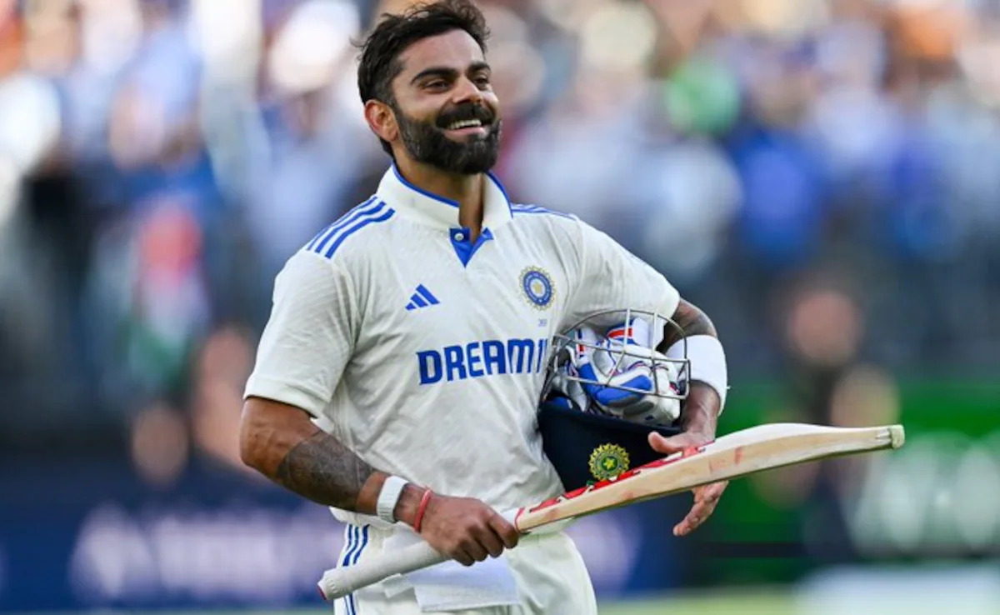

Virat Kohli (born 5 November 1988) is an Indian international cricketer and former captain of the Indian national cricket team. He is widely regarded as one of the greatest modern batsmen in the history of cricket. Kohli made his international debut in 2008 and soon became a key player for India across all formats. He is known for his aggressive batting style, excellent fitness, and remarkable consistency in scoring runs. Kohli has scored numerous centuries in Test cricket, One Day Internationals, and T20 Internationals. He has also been one of the most successful players in the Indian Premier League, representing the Royal Challengers Bangalore franchise.
